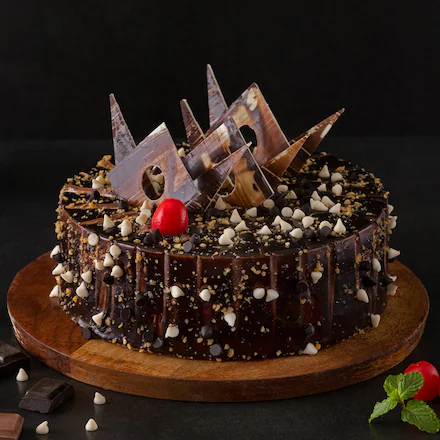

Chocolate Cake

Ingredients
- 1.5 cups flour
- 1 cup sugar
- 0.5 cup cocoa powder
- 1 teaspoon baking powder
- 2 eggs and 1 cup milk
Steps
- Preheat the oven to 180 C for at least 10 minutes so it reaches a stable baking temperature.
- Grease a cake tin with a little oil or butter and dust lightly with flour to prevent sticking.
- In a large bowl, sieve flour, cocoa powder, and baking powder to remove lumps and aerate the dry mix.
- Add sugar to the dry ingredients and whisk gently until everything is evenly combined.
- In a separate bowl, beat eggs and milk together until smooth.
- Pour the wet mixture into the dry ingredients and whisk until you get a lump-free, pourable batter.
- Do not overmix; once the batter looks smooth and glossy, stop whisking.
- Transfer the batter to the prepared tin and tap it gently on the counter to release trapped air bubbles.
- Bake for 30 to 35 minutes, or until a toothpick inserted in the center comes out clean.
- Cool the cake in the tin for 10 minutes, then remove and cool completely before slicing and serving.